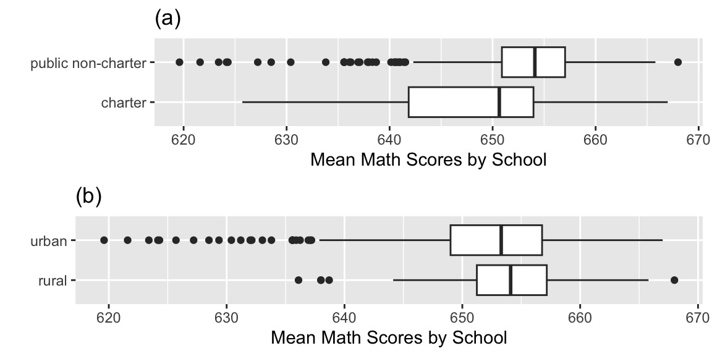
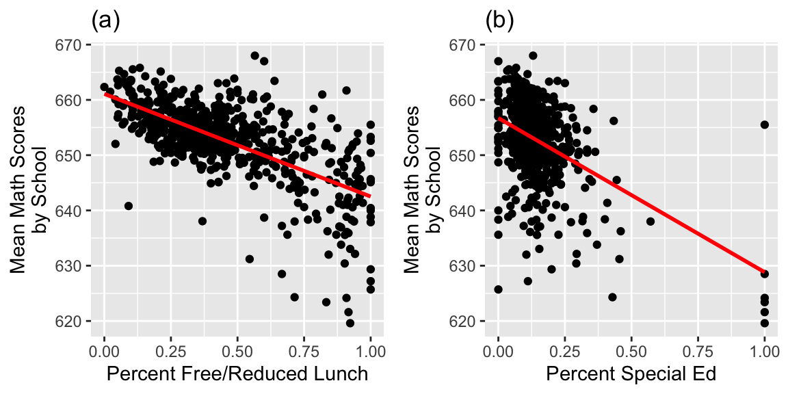

Chapter 4 Longitudinal Data
These notes provide a summary of Chapter 9 in Beyond Multiple Linear Regression by Roback and Legler. Much of the code that appears here comes from the textbookâs Github repository.
# Packages required for Chapter 9
library(MASS)
library(gridExtra)
library(mnormt)
library(lme4)
library(lmerTest)
library(knitr)
library(kableExtra)
library(tidyverse)
library(Hmisc)
library(nlme)In this chapter, we look at situations where data are collected on the same observational units over time.
4.1 Charter Schools Exploratory Analysis
Charter schools emerged in the 1990âs as alternatives to traditional public schools. While they are publicly funded, charter schools are exempt from many regulations that traditional publics schools must follow. Thus, charters will often extend the school days or year and tend to offer non-traditional techniques and styles of instruction and learning.
In this case study, we compare the performance of students in public schools and charter schools on the Minnesota Comprehensive Assessment, using data from 2008-2010.
4.1.1 Data Organization
Key variables in chart_wide_condense.csv which we will examine to address the research questions above are:
schoolid= includes district type, district number, and school numberschoolName= name of schoolurban= is the school in an urban (1) or rural (0) location?charter= is the school a charter school (1) or a non-charter public school (0)?schPctsped= proportion of special education students in a school (based on 2010 figures)schPctfree= proportion of students who receive free or reduced lunches in a school (based on 2010 figures). This serves as a measure of poverty among school families.MathAvgScore.0= average MCA-II math score for all sixth grade students in a school in 2008MathAvgScore.1= average MCA-II math score for all sixth grade students in a school in 2009MathAvgScore.2= average MCA-II math score for all sixth grade students in a school in 2010
This data is stored in WIDE format, with one row per school.
#Getting started
chart.wide = read_csv("https://raw.githubusercontent.com/proback/BeyondMLR/master/data/chart_wide_condense.csv") head(head(chart.wide))## # A tibble: 6 Ã 10
## ...1 schoolid schooâ¦Â¹ urban charter schPcâ¦Â² schPcâ¦Â³ MathAâ¦â´ MathAâ¦âµ MathAâ¦â¶
## <dbl> <chr> <chr> <dbl> <dbl> <dbl> <dbl> <dbl> <dbl> <dbl>
## 1 1 Dtype 1 D⦠RIPPLE⦠0 0 0.118 0.363 653. 657. 653.
## 2 4 Dtype 1 D⦠WRENSH⦠0 0 0.152 0.424 647. 645. 652.
## 3 7 Dtype 1 D⦠CENTRA⦠0 0 0.123 0.262 655. 658. 660.
## 4 10 Dtype 1 D⦠SANDBU⦠1 0 0.0827 0.248 656. 657. 660.
## 5 13 Dtype 1 D⦠OAK VI⦠1 0 0.0954 0.142 658. 658. 660.
## 6 16 Dtype 1 D⦠ROOSEV⦠1 0 0.0886 0.241 656. 659. 660.
## # ⦠with abbreviated variable names ¹âschoolName, ²âschPctsped, ³âschPctfree,
## # â´âMathAvgScore.0, âµâMathAvgScore.1, â¶âMathAvgScore.24.1.2 Missing Data
summary(chart.wide)## ...1 schoolid schoolName urban
## Min. : 1.0 Length:618 Length:618 Min. :0.0000
## 1st Qu.: 446.8 Class :character Class :character 1st Qu.:0.0000
## Median : 885.5 Mode :character Mode :character Median :1.0000
## Mean : 885.8 Mean :0.6165
## 3rd Qu.:1332.2 3rd Qu.:1.0000
## Max. :1733.0 Max. :1.0000
##
## charter schPctsped schPctfree MathAvgScore.0
## Min. :0.0000 Min. :0.00000 Min. :0.0000 Min. :625.7
## 1st Qu.:0.0000 1st Qu.:0.08815 1st Qu.:0.2694 1st Qu.:649.4
## Median :0.0000 Median :0.12500 Median :0.4000 Median :652.8
## Mean :0.1181 Mean :0.14356 Mean :0.4509 Mean :652.1
## 3rd Qu.:0.0000 3rd Qu.:0.17032 3rd Qu.:0.5830 3rd Qu.:655.9
## Max. :1.0000 Max. :1.00000 Max. :1.0000 Max. :667.6
## NA's :61
## MathAvgScore.1 MathAvgScore.2
## Min. :621.4 Min. :619.6
## 1st Qu.:649.0 1st Qu.:651.5
## Median :653.1 Median :655.6
## Mean :652.1 Mean :654.5
## 3rd Qu.:656.9 3rd Qu.:658.8
## Max. :666.4 Max. :673.3
## NA's :46 NA's :14- There are 61 missing values for MathAvgScore.0, 46 for MathAvgScore.1, and 14 for MathAvgScore.2.
sum(complete.cases(chart.wide))## [1] 540- 540 of the schools have complete data on all variables, while 78 have at least one missing value.
Approaches for Handling Missing Data
Complete Case Analysis - Include only schools with complete data. While easy, this means throwing away 78 of 618 schools (12.6%). Also, schools with missing values could be systematicall different than those with observed data, so ignoring them might lead to improper conclusions.
Last observation carried forward - Use only the last recorded score for each school. A conservative approach sometimes used in clinical trials. Assumes that a schoolâs most recent score is representative of later missing scores. Information about trajectories over time is thrown away.
Imputation of missing observations - âfill inâ missing observations, using information from observed data, then run analysis. Risks include misrepresenting missing observations and overstating precision in final results.
Multilevel methods - use available data to estimate patterns over time by school and combine in a way that recognizes that time trends for schools with complete data are more precise than time trends for schools with fewer measurements.
We will approach this problem using multilevel methods.
4.1.3 Convert to Tidy Form
First, we will convert the data to long (or in this case tidy) form.
#Getting started-2
# Create data frame in LONG form (one obs per school-year)
# chart.long is 1854x10 with 121 NAs for MathAvgScore
select <- dplyr::select
chart.long <- chart.wide %>%
pivot_longer(cols=MathAvgScore.0:MathAvgScore.2,
names_to = "key", # years since 2008
values_to = "MathAvgScore") %>%
separate(key, into = c("name", "year08"), sep = "\\.") %>%
select(-c("name")) %>%
arrange(schoolid, year08) %>%
mutate(year08 = as.numeric(year08))
head(chart.long)## # A tibble: 6 Ã 9
## ...1 schoolid schooâ¦Â¹ urban charter schPcâ¦Â² schPcâ¦Â³ year08 MathAâ¦â´
## <dbl> <chr> <chr> <dbl> <dbl> <dbl> <dbl> <dbl> <dbl>
## 1 1 Dtype 1 Dnum 1 Snu⦠RIPPLE⦠0 0 0.118 0.363 0 653.
## 2 1 Dtype 1 Dnum 1 Snu⦠RIPPLE⦠0 0 0.118 0.363 1 657.
## 3 1 Dtype 1 Dnum 1 Snu⦠RIPPLE⦠0 0 0.118 0.363 2 653.
## 4 4 Dtype 1 Dnum 100 S⦠WRENSH⦠0 0 0.152 0.424 0 647.
## 5 4 Dtype 1 Dnum 100 S⦠WRENSH⦠0 0 0.152 0.424 1 645.
## 6 4 Dtype 1 Dnum 100 S⦠WRENSH⦠0 0 0.152 0.424 2 652.
## # ⦠with abbreviated variable names ¹âschoolName, ²âschPctsped, ³âschPctfree,
## # â´âMathAvgScore4.1.4 Exploratory Analyses for General Multilevel Models
We have a total of 1733 observation on 618 schools, observed over 3 years. Thus, we can analyze the data at two different levels.
Levels
Level 2 - observations that pertain to a school and stay constant over time (charter or non-charter, urban or rural, percent free and reduced lunch, percent special education)
Level 1 - observations that change over time (year and average math scores)
We calculate the average math score across the three years, and also add indicator variables for whether the school was in an urban setting, and whether it was a charter school.
#Getting started-3
# Add average across all years for each school for EDA plots
chart.means <- chart.long %>%
group_by(schoolid) %>%
summarise(mean3yr = mean(MathAvgScore, na.rm=T))
chart.wide <- chart.wide %>%
mutate(urban0 = ifelse(urban==1, "urban", "rural"),
charter0 = ifelse(charter==1, "charter",
"public non-charter")) %>%
left_join(chart.means, by="schoolid")Histogram of mean sixth grade MCA math test scores over the years 2008-2010 for 618 Minnesota schools.
###histogram of mean math scores (1 obs per school)
ggplot(data=chart.wide,aes(x=mean3yr)) +
geom_histogram(binwidth=5,color="black",fill="white") +
xlab("Mean Math Scores by School") + ylab("Frequency")
Boxplots of categorical Level Two covariates vs. average MCA math scores. Plot (a) shows charter vs. public non-charter schools, while plot (b) shows urban vs. rural schools.
charter.school <- ggplot(data = chart.wide,
aes(x = factor(charter0), y = mean3yr)) +
geom_boxplot() + coord_flip() + ylab("Mean Math Scores by School") +
xlab("") + labs(title="(a)")
urban.school <- ggplot(data = chart.wide,
aes(x = factor(urban0), y = mean3yr)) +
geom_boxplot() + coord_flip() + ylab("Mean Math Scores by School") +
xlab("") + labs(title="(b)")
grid.arrange(charter.school,urban.school,ncol=1,nrow=2)
Scatterplots of average MCA math scores by (a) percent free and reduced lunch, (b) percent special education.
PctFree.school <- ggplot(data = chart.wide,
aes(x = schPctfree, y = mean3yr)) +
geom_point() +
geom_smooth(se=FALSE,method="lm",color="red") +
xlab("Percent Free/Reduced Lunch") +
ylab("Mean Math Scores\nby School") + labs(title="(a)")
PctSped.school <- ggplot(data = chart.wide,
aes(x = schPctsped, y = mean3yr)) +
geom_point() +
geom_smooth(se=FALSE,method="lm",color="red") +
xlab("Percent Special Ed") +
ylab("Mean Math Scores\nby School") + labs(title="(b)")
grid.arrange(PctFree.school, PctSped.school, ncol = 2)chart.wide %>% group_by(charter) %>% summarise(Percent_Free_Red_Lunch = mean(schPctfree),
Percent_Special_Ed = mean(schPctsped),
Mean_Math_Score = mean(mean3yr),
N=n())## # A tibble: 2 Ã 5
## charter Percent_Free_Red_Lunch Percent_Special_Ed Mean_Math_Score N
## <dbl> <dbl> <dbl> <dbl> <int>
## 1 0 0.433 0.143 653. 545
## 2 1 0.585 0.151 648. 734.1.5 Exploratory Analyses for Longitudinal Data
We use lattice plots and spaghetti plots to examine the change in scores over time for various schools.
smallchart.long <- filter(chart.long, row_number() <= 72)#Lattice plots
# First change names of Central and Chaska
smallchart.long$schoolName[7:9]="CENTRAL108"
smallchart.long$schoolName[37:39]="CHASKAEAST"
smallchart.long$schoolName[40:42]="CHASKAWEST"
smallchart.long$schoolName[64:66]="CENTRAL13"Lattice plot by school of math scores over time with linear fit for the first 24 schools in the data set.
ggplot(smallchart.long, aes(x = year08, y = MathAvgScore)) +
geom_point() + geom_line() +
facet_wrap(~schoolName,ncol=6) +
scale_x_continuous(limits=c(0,2), breaks=c(0,1,2)) +
scale_y_continuous(limits=c(640,665)) + theme(strip.text.x=element_blank()) +
labs(x="Years since 2008",y="Math Scores")
We select a sampe of 73 non-charter schools (the number of charter schools), and compare scores over time.
set.seed(27) #pulls same random sample every time
wide.charter <- chart.wide %>% filter(charter==1) #dataframe with just charter schools
# select a sample of public schools with size equal to number of charter schools
samp = sample(1:length(chart.wide$charter==0), size=dim(wide.charter)[1])
wide.public <- chart.wide %>%
filter(charter == 0) %>%
sample_n( dim(wide.charter)[1] )
sampdata <- bind_rows(wide.charter, wide.public) %>%
mutate(vars = row_number()) # Just use numbers 1-146 as school ids
#convert to long form
sampdata.l <- sampdata %>%
pivot_longer(names_to = "key", values_to = "MathAvgScore", cols=MathAvgScore.0:MathAvgScore.2) %>%
separate(key, into = c("name", "year08"), sep = "\\.") %>%
select(-name) %>%
arrange(charter, vars, year08) %>%
mutate(year08 = as.numeric(year08))Spaghetti (or trellis) plots showing time trends for each school by school type, for a random sample of charter schools (left) and public non-charter schools (right), with overall fits using loess (bold).
##Spaghetti Plots
#get rid of NA data
newsampdata.l <- sampdata.l %>% na.omit()
ggplot(newsampdata.l, aes(x = year08, y = MathAvgScore)) +
geom_line(aes(group=schoolid),color="grey") +
facet_grid(.~charter0) +
geom_smooth(aes(group=1),color="black",size=1) +
labs(x="Years since 2008",y="Math Scores") Spaghetti (or trellis) plots showing time trends for each school by quartiles of percent free and reduced lunch, with loess fits.
# divide into quartiles
newsampdata.l <- newsampdata.l %>%
mutate(splitup = paste("Quartile",
as.numeric(cut2(schPctfree, g=4))))ggplot(newsampdata.l,aes(x=year08,y=MathAvgScore)) +
geom_line(aes(group=schoolid),color="grey") +
geom_smooth(method="loess",color="black",se=FALSE,size=.75) +
facet_grid(~splitup) +
labs(x="Years since 2008",y="Math Scores") +
scale_x_continuous(limits=c(0,2), breaks=c(0,1,2)) charter schools had math scores that were lower on average than public non-charter schools and more variable.
Public non-charter schools have higher scores across all years; both school types show little growth between 2008 and 2009, but greater growth between 2009 and 2010, especially charter schools.
Schools with lower percentages of free and reduced lunch students tend to have higher math scores and less variability. Across all levels of free and reduced lunch, we see greater gains between 2009 and 2010 than between 2008 and 2009.
4.2 Multilevel Longitudinal Models
4.2.1 Unconditional Means Model
- begin with unconditional means model, (no predictors at any level).
- assess the amount of variation at each level, compare variability within school to variability between schools.
Define \(Y_{ij}\) as the MCA-II math score from school \(i\) and year \(j\).
\[ \begin{equation*} Y _{ij} = \alpha_{0} + u_{i} + \epsilon_{ij} \textrm{ with } u_{i} \sim N(0, \sigma^2_u) \textrm{ and } \epsilon_{ij} \sim N(0, \sigma^2) \end{equation*} \]
#Model A (Unconditional means model)
model.a <- lmer(MathAvgScore~ 1 + (1|schoolid),
REML=T, data=chart.long)
summary(model.a)## Linear mixed model fit by REML. t-tests use Satterthwaite's method [
## lmerModLmerTest]
## Formula: MathAvgScore ~ 1 + (1 | schoolid)
## Data: chart.long
##
## REML criterion at convergence: 10530.1
##
## Scaled residuals:
## Min 1Q Median 3Q Max
## -3.1567 -0.4948 0.0137 0.5130 3.5689
##
## Random effects:
## Groups Name Variance Std.Dev.
## schoolid (Intercept) 41.87 6.471
## Residual 10.57 3.251
## Number of obs: 1733, groups: schoolid, 618
##
## Fixed effects:
## Estimate Std. Error df t value Pr(>|t|)
## (Intercept) 652.7460 0.2726 591.6845 2395 <0.0000000000000002 ***
## ---
## Signif. codes: 0 '***' 0.001 '**' 0.01 '*' 0.05 '.' 0.1 ' ' 14.2.2 Interpretations in Unconditional Means Model
\(\widehat{\alpha}_{0}\) = 652.7 = the mean math score across all schools and all years
\(\widehat{\sigma}_u\)= 6.47= the standard deviation in average math scores (averaging across the tree years), for different schools (tells us on average, how much do average scores differ between schools?)
\(\widehat{\sigma}\)= 3.25 = the standard deviation in math scores for the same school between different years (tells us how much scores vary from year to year in the same school)
4.2.3 Intraclass Correlation Coefficient:
\[ \begin{equation*} \widehat{\rho}=\frac{\widehat{\sigma}^2_u}{\widehat{\sigma}^2_u + \widehat{\sigma}^2} = \frac{41.869}{41.869+10.571}= 0.798 \end{equation*} \]
79.8% of the total variation in math scores is attributable to differences among schools rather than changes over time within schools. We can also say that the average correlation for any pair of responses from the same school is 0.798.
4.2.4 Unconditional Growth Model
The second model in most multilevel contexts introduces a covariate at Level One. With longitudinal data, this covariate is time. There are still no predictors at Level Two.
This model is then called the unconditional growth model, and allows us to assess how much of the within-school variability can be attributed to systematic changes over time.
We include a random slope term to allow the change in scores from year to year to vary between schools.
Let \(Y_{ij}\) be the math score of the \(i^{th}\) school in year \(j\). Then we can model the linear change in math test scores over time for School \(i\) according to Model B:
\[ \begin{equation*} Y_{ij}=\alpha_{0} + \beta_{0}\textrm{Year08}_{ij}+u_{i}+v_{i}\textrm{Year08}_{ij} + \epsilon_{ij} \end{equation*} \]
where \(\epsilon_{ij}\sim N(0,\sigma^2)\) and
\[ \left[ \begin{array}{c} u_{i} \\ v_{i} \end{array} \right] \sim N \left( \left[ \begin{array}{c} 0 \\ 0 \end{array} \right], \left[ \begin{array}{cc} \sigma_{u}^{2} & \\ \rho_{uv}\sigma_{u}\sigma_{v} & \sigma_{v}^{2} \end{array} \right] \right) . \]
\(\alpha_0\) is the average math score in 2008.
\(\beta_0\) is the slope relating average math score to time, that is the mean change in math scores from one year to the next.
\(u_i\) is a random effect capturing how individual schools 2008 scores vary from the overall average.
\(v_i\) is a random effect capturing how slopes for individual schools vary from the average slope.
\(\sigma_u\) quantifies the amount of variability between scores in different schools in 2008.
\(\sigma_v\) quantifies the amount of variability in average year-to-year change between schools.
\(\sigma\) quantifies the variability in test scores within the same school
#Model B (Unconditional growth)
model.b <- lmer(MathAvgScore~ year08 + (year08|schoolid),
REML=T, data=chart.long)
summary(model.b)Linear mixed model fit by REML. t-tests use Satterthwaite's method [
lmerModLmerTest]
Formula: MathAvgScore ~ year08 + (year08 | schoolid)
Data: chart.long
REML criterion at convergence: 10339.5
Scaled residuals:
Min 1Q Median 3Q Max
-3.1579 -0.4668 0.0180 0.4596 3.4972
Random effects:
Groups Name Variance Std.Dev. Corr
schoolid (Intercept) 39.4410 6.2802
year08 0.1105 0.3325 0.72
Residual 8.8200 2.9699
Number of obs: 1733, groups: schoolid, 618
Fixed effects:
Estimate Std. Error df t value Pr(>|t|)
(Intercept) 651.40766 0.27934 565.22116 2331.96 <0.0000000000000002 ***
year08 1.26495 0.08997 537.98822 14.06 <0.0000000000000002 ***
---
Signif. codes: 0 '***' 0.001 '**' 0.01 '*' 0.05 '.' 0.1 ' ' 1
Correlation of Fixed Effects:
(Intr)
year08 -0.2344.2.5 Interpretations in Unconditional Growth Model
From this output, we obtain estimates of our six model parameters:
- \(\widehat{\alpha}_{0}\) = 651.4 = the mean math score for the population of schools in 2008.
- \(\widehat{\beta}_{0}\) = 1.26 = the mean yearly change in math test scores for the population during the three-year observation period.
- \(\widehat{\sigma}_u\) = 6.28 = the standard deviation in math scores between schools in 2008
- \(\widehat{\sigma}_v\) = 0.33 = the standard deviation in rates of change in math scores during the three-year observation period.
- \(\widehat{\sigma}\) = 2.97 = the standard deviation in scores within the same school.
- \(\widehat{\rho}_{uv}\) = 0.72 = the correlation in schoolsâ 2008 math score and their rate of change in scores between 2008 and 2010.
Schools had a mean math test score of 651.4 in 2008 and their mean test scores tended to increase by 1.26 points per year over the three-year observation period.
Since \(\widehat{\beta}_{0}>0\) and \(\rho_{uv} > 0\), we can conclude that on average, math scores increased from 2008-2010, and that schools with higher math scores in 2008 saw bigger increases than those with lower scores in 2008.
4.3 Quadratic and Piecewise Linear Models
4.3.1 Quadratic Trend over Time
Since our exploratory data analysis revealed a possible nonlinear trend, we might consider adding a quadratic term for year.
When squaring a variable, itâs helpful to center it first.
We create a centered variable yearc by subtracting 1 from year08. (So 2008 is denoted -1, 2009 is denoted 0, and 2010 is denoted 1).
Then, we create a varaible yearc2 that is the square of this variable.
#center year and calculate year^2
chart.long <- chart.long %>%
mutate(yearc = year08 - 1,
yearc2 = yearc ^ 2)4.3.2 Quadratic Model
Weâll include a random intercept term \(u_i\) modeling random differences between schools.
Model: \[ Y_{ij}=\alpha_{0}+\beta_{0}\textrm{YearC}_{ij}+\gamma_{0}\textrm{YearC}^{2}_{ij} + u_i + \epsilon_{ij} \]
where \(u_i\sim\mathcal{N}(0, \sigma^2_u)\) and \(\epsilon_{ij}\sim\mathcal{N}(0, \sigma^2)\)
4.3.3 Quadratic Model in R
# Modeling quadratic time trend
model.b1 <- lmer(MathAvgScore~ yearc + yearc2 + (1|schoolid),
REML=T, data=chart.long)
summary(model.b1)Linear mixed model fit by REML. t-tests use Satterthwaite's method [
lmerModLmerTest]
Formula: MathAvgScore ~ yearc + yearc2 + (1 | schoolid)
Data: chart.long
REML criterion at convergence: 10298.2
Scaled residuals:
Min 1Q Median 3Q Max
-3.2125 -0.4756 0.0088 0.4687 3.4954
Random effects:
Groups Name Variance Std.Dev.
schoolid (Intercept) 43.050 6.561
Residual 8.523 2.919
Number of obs: 1733, groups: schoolid, 618
Fixed effects:
Estimate Std. Error df t value Pr(>|t|)
(Intercept) 651.94235 0.29229 768.06158 2230.448 < 0.0000000000000002 ***
yearc 1.26993 0.08758 1107.30220 14.501 < 0.0000000000000002 ***
yearc2 1.06841 0.15046 1098.25374 7.101 0.00000000000222 ***
---
Signif. codes: 0 '***' 0.001 '**' 0.01 '*' 0.05 '.' 0.1 ' ' 1
Correlation of Fixed Effects:
(Intr) yearc
yearc -0.011
yearc2 -0.350 -0.016The small p-value on the yearc2 line provides evidence of a quadratic relationship between year and test scores.
4.3.4 Estimated Response Curve
\[E(Y)_{ij} = 652 + 1.27(\textrm{YearC}) + 1.07(\textrm{YearC})^2 \]
Where \(\textrm{YearC}=\textrm{Year}-2009\).
ggplot(data=chart.long, aes(x=yearc, y=MathAvgScore)) + geom_point() + stat_smooth(method="lm", se=TRUE, fill=NA, formula=y ~ poly(x, 2, raw=TRUE),colour="red")There is more growth, on average, between 2009 and 2010, than between 2008 and 2009.
4.3.5 Linear and Quadratic Error Terms
The previous model assumes that there are differences in average math scores between schools, but that year-to-year change in scores is the same between schools.
If we wanted to allow year-to-year change to vary between schools, we could add random effects associated with linear and quadratic change.
One option would be to assume the intercept, linear term, and quadratic term differ between schools, i.e.Â
- Level One: \[ \begin{align*} Y_{ij} & =(\alpha_{0} + u_{i})+(\beta_{0} + v_{i})\textrm{Year08}_{ij}+ (\gamma_{0} + w_{i})\textrm{Year08}^{2}_{ij} + \epsilon_{ij} \\ & =\alpha_{0} +\beta_{0}\textrm{Year08}_{ij}+ \gamma_{0}\textrm{Year08}^{2}_{ij} + u_{i} + v_{i}\textrm{Year08}_{ij} + w_{i}\textrm{Year08}^{2}_{ij} + \epsilon_{ij} \end{align*} \] where \(\epsilon_{ij}\sim N(0,\sigma^2)\) and
\[ \left[ \begin{array}{c} u_{i} \\ v_{i} \\ w_{i} \end{array} \right] \sim N \left( \left[ \begin{array}{c} 0 \\ 0 \\ 0 \end{array} \right], \left[ \begin{array}{ccc} \sigma_{u}^{2} & & \\ \rho_{uv}\sigma_{u}\sigma_{v} & \sigma_{v}^{2} & \\ \rho_{uw}\sigma_{u}\sigma_{w} & \rho_{vw}\sigma_{v}\sigma_{w} & \sigma_{w}^{2} \end{array} \right] \right) . \]
4.3.6 Model with Many Random Terms in R
# Modeling quadratic time trend
model.b2 <- lmer(MathAvgScore~ yearc + yearc2 + ((yearc2 + yearc) |schoolid),
REML=T, data=chart.long)Error: number of observations (=1733) <= number of random effects (=1854) for term ((yearc2 + yearc) | schoolid); the random-effects parameters and the residual variance (or scale parameter) are probably unidentifiablesummary(model.b2)Error in h(simpleError(msg, call)): error in evaluating the argument 'object' in selecting a method for function 'summary': object 'model.b2' not foundWe now have 6 variance components (\(\sigma_u\), \(\sigma_v\), \(\sigma_w\), \(\rho_u\), \(\rho_v\), \(\rho_w\)) and only three observations at level 2. In order to obtain estimates, we need at least as many observations as parameters being estimated. Hence, this model doesnât work.
4.3.7 Only a Linear Random Term
We could try a model of the form
\[ \begin{equation*} Y_{ij}=\alpha_{0} + \beta_{0}\textrm{Year08}_{ij} + \gamma_{0}\textrm{Year08}_{ij}^2 +u_{i}+v_{i}\textrm{Year08}_{ij} + \epsilon_{ij} \end{equation*} \]
where \(\epsilon_{ij}\sim N(0,\sigma^2)\) and
\[ \left[ \begin{array}{c} u_{i} \\ v_{i} \end{array} \right] \sim N \left( \left[ \begin{array}{c} 0 \\ 0 \end{array} \right], \left[ \begin{array}{cc} \sigma_{u}^{2} & \\ \rho_{uv}\sigma_{u}\sigma_{v} & \sigma_{v}^{2} \end{array} \right] \right) . \]
# Modeling quadratic time trend
model.b3 <- lmer(MathAvgScore~ yearc + yearc2 + ((yearc) |schoolid),
REML=T, data=chart.long)
summary(model.b3)Linear mixed model fit by REML. t-tests use Satterthwaite's method [
lmerModLmerTest]
Formula: MathAvgScore ~ yearc + yearc2 + ((yearc) | schoolid)
Data: chart.long
REML criterion at convergence: 10290.2
Scaled residuals:
Min 1Q Median 3Q Max
-3.1287 -0.4581 0.0137 0.4552 3.3694
Random effects:
Groups Name Variance Std.Dev. Corr
schoolid (Intercept) 42.8574 6.5466
yearc 0.5002 0.7073 0.36
Residual 8.0548 2.8381
Number of obs: 1733, groups: schoolid, 618
Fixed effects:
Estimate Std. Error df t value Pr(>|t|)
(Intercept) 651.94300 0.29028 749.70652 2245.890 < 0.0000000000000002 ***
yearc 1.25402 0.09001 537.52786 13.933 < 0.0000000000000002 ***
yearc2 1.07136 0.14634 550.10553 7.321 0.000000000000879 ***
---
Signif. codes: 0 '***' 0.001 '**' 0.01 '*' 0.05 '.' 0.1 ' ' 1
Correlation of Fixed Effects:
(Intr) yearc
yearc 0.094
yearc2 -0.342 -0.0174.3.9 Model Comparison
We compare the quadratic model with the random intercept to the quadratic model with random intercept and linear terms.
# Intercept only
BIC(model.b1)## [1] 10335.45# Intercept and linear term
BIC(model.b3)## [1] 10342.4The model with only the random intercept term is preferred.
4.3.10 Piecewise Linear Model
Another frequently used approach to modeling time effects is the piecewise linear model.
This model assumes that average scores change linearly from year to year, but that the slope between the first and second years might be different than the slope between the second and third years
We create a binary variables to indicate whether the score came from the 08-09 or 09-10 school years.
# Modeling piecewise linear time trend with 3 time points
# (won't work in general)
chart.long <- chart.long %>%
mutate(year0809 = ifelse(year08==1, 1, 0),
year0810 = ifelse(year08==2, 1, 0))
head(chart.long)## # A tibble: 6 Ã 13
## ...1 schoolid schooâ¦Â¹ urban charter schPcâ¦Â² schPcâ¦Â³ year08 MathAâ¦â´ yearc
## <dbl> <chr> <chr> <dbl> <dbl> <dbl> <dbl> <dbl> <dbl> <dbl>
## 1 1 Dtype 1 Dnum⦠RIPPLE⦠0 0 0.118 0.363 0 653. -1
## 2 1 Dtype 1 Dnum⦠RIPPLE⦠0 0 0.118 0.363 1 657. 0
## 3 1 Dtype 1 Dnum⦠RIPPLE⦠0 0 0.118 0.363 2 653. 1
## 4 4 Dtype 1 Dnum⦠WRENSH⦠0 0 0.152 0.424 0 647. -1
## 5 4 Dtype 1 Dnum⦠WRENSH⦠0 0 0.152 0.424 1 645. 0
## 6 4 Dtype 1 Dnum⦠WRENSH⦠0 0 0.152 0.424 2 652. 1
## # ⦠with 3 more variables: yearc2 <dbl>, year0809 <dbl>, year0810 <dbl>, and
## # abbreviated variable names ¹âschoolName, ²âschPctsped, ³âschPctfree,
## # â´âMathAvgScore4.3.11 Piecewise Model Equation
Let Year2 and Year3 denote indicators for the second and third years (09 and 10), respectively. We fit a model of the form:
\[ \begin{equation*} Y_{ij}=\beta{0} + \beta_{1}\textrm{Year2}_{ij} + \beta_{2}\textrm{Year3}_{ij} +u_{i} + \epsilon_{ij} \end{equation*} \] where \(u_i\sim\mathcal{N}(0, \sigma^2_u)\) and \(\epsilon_{ij}\sim\mathcal{N}(0, \sigma^2)\)
- \(\beta_0\) represents the average math score in year 1 (2008)
- \(\beta_1\) represents the average change in math score from year 1 to year 2
- \(\beta_2\) represents the average change in math score from year 1 to year 3
model.b4 <- lmer(MathAvgScore~ year0809 + year0810 +
(1|schoolid), REML=T, data=chart.long)
summary(model.b4)## Linear mixed model fit by REML. t-tests use Satterthwaite's method [
## lmerModLmerTest]
## Formula: MathAvgScore ~ year0809 + year0810 + (1 | schoolid)
## Data: chart.long
##
## REML criterion at convergence: 10296.8
##
## Scaled residuals:
## Min 1Q Median 3Q Max
## -3.2125 -0.4756 0.0088 0.4687 3.4954
##
## Random effects:
## Groups Name Variance Std.Dev.
## schoolid (Intercept) 43.050 6.561
## Residual 8.523 2.919
## Number of obs: 1733, groups: schoolid, 618
##
## Fixed effects:
## Estimate Std. Error df t value Pr(>|t|)
## (Intercept) 651.7408 0.2932 777.0126 2222.750 <0.0000000000000002 ***
## year0809 0.2015 0.1753 1097.5936 1.149 0.251
## year0810 2.5399 0.1752 1107.3022 14.501 <0.0000000000000002 ***
## ---
## Signif. codes: 0 '***' 0.001 '**' 0.01 '*' 0.05 '.' 0.1 ' ' 1
##
## Correlation of Fixed Effects:
## (Intr) yr0809
## year0809 -0.304
## year0810 -0.318 0.514- On average, scores improved by 0.20 points from 2008-2009.
- On average, scores improved by 2.54 points from 2009-2010.
4.3.12 Estimated Response Curve
Red is quadratic estimate. Blue is piecewise linear estimate.
ggplot(data=chart.long, aes(x=yearc, y=MathAvgScore)) + geom_point() + stat_smooth(method="lm", se=TRUE, fill=NA, formula=y ~ poly(x, 2, raw=TRUE),colour="red") +
geom_segment(aes(x = -1 , y = fixef(model.b4)[1], xend = 0, yend = fixef(model.b4)[1] + fixef(model.b4)[2]), colour = "blue")+
geom_segment(aes(x = 0 , y = fixef(model.b4)[1], xend = 1, yend = fixef(model.b4)[1] + fixef(model.b4)[3]), colour = "blue")
4.3.13 Comparing Quadratic and Piecewise Models
AIC(model.b1) # quadratic## [1] 10308.16AIC(model.b4) # piecewise## [1] 10306.77BIC(model.b1) #quadratic## [1] 10335.45BIC(model.b4) #piecewise ## [1] 10334.06The performance of this model is very similar to the quadratic growth model by AIC and BIC measures, and the story told by fixed effects estimates is also very similar. While the mean yearly increase in math scores was 0.2 points between 2008 and 2009, it was 2.3 points between 2009 and 2010.
Despite the good performances of the quadratic growth and piecewise linear models on our three-year window of data, we will continue to use linear growth assumptions in the remainder of this chapter. Not only is a linear model easier to interpret and explain, but itâs probably a more reasonable assumption in years beyond 2010. Predicting future performance is more risky by assuming a steep one-year rise or a non-linear rise will continue, rather than by using the average increase over two years.
4.4 Model for School Type
4.4.1 Uncontrolled Effects of School Type
Weâll test for differences between charter and non-charter schools, by adding school type as a fixed effect.
Model:
\[ \begin{align*} Y_{ij} & = [\alpha_{0} + \beta_{0}\textrm{Year08}_{ij} +\alpha_{1}\textrm{Charter}_i+ \beta_{1}\textrm{Charter}_i\textrm{Year08}_{ij}] + \\ & \quad [u_{i} + v_{i}\textrm{Year08}_{ij} + \epsilon_{ij}] \end{align*} \]
where
\[ \left[ \begin{array}{c} u_{i} \\ v_{i} \end{array} \right] \sim N \left( \left[ \begin{array}{c} 0 \\ 0 \end{array} \right], \left[ \begin{array}{cc} \sigma_{u}^{2} & \\ \rho_{uv}\sigma_{u}\sigma_{v} & \sigma_{v}^{2} \end{array} \right] \right) . \]
#Model C (uncontrolled effects of school type on
# intercept and slope)
model.c <- lmer(MathAvgScore~ charter + year08 +
charter:year08 + (year08|schoolid),
REML=T, data=chart.long)
summary(model.c)## Linear mixed model fit by REML. t-tests use Satterthwaite's method [
## lmerModLmerTest]
## Formula: MathAvgScore ~ charter + year08 + charter:year08 + (year08 |
## schoolid)
## Data: chart.long
##
## REML criterion at convergence: 10291.6
##
## Scaled residuals:
## Min 1Q Median 3Q Max
## -3.1935 -0.4710 0.0129 0.4660 3.4592
##
## Random effects:
## Groups Name Variance Std.Dev. Corr
## schoolid (Intercept) 35.8319 5.9860
## year08 0.1311 0.3621 0.88
## Residual 8.7845 2.9639
## Number of obs: 1733, groups: schoolid, 618
##
## Fixed effects:
## Estimate Std. Error df t value Pr(>|t|)
## (Intercept) 652.05844 0.28449 554.58175 2291.998 < 0.0000000000000002 ***
## charter -6.01843 0.86562 622.37343 -6.953 0.00000000000908 ***
## year08 1.19709 0.09427 526.23703 12.698 < 0.0000000000000002 ***
## charter:year08 0.85571 0.31430 596.41970 2.723 0.00667 **
## ---
## Signif. codes: 0 '***' 0.001 '**' 0.01 '*' 0.05 '.' 0.1 ' ' 1
##
## Correlation of Fixed Effects:
## (Intr) chartr year08
## charter -0.329
## year08 -0.203 0.067
## chartr:yr08 0.061 -0.298 -0.3004.4.2 Interpretations for School Type Model
Fixed effects:
- \(\widehat{\alpha}_{0} = 652.1.\) The estimated mean test score for 2008 for non-charter public schools is 652.1.
- \(\widehat{\alpha}_{1}= -6.02.\) Charter schools have an estimated test score in 2008 which is 6.02 points lower than public non-charter schools.
- \(\widehat{\beta}_{0}= 1.20.\) Public non-charter schools have an estimated mean increase in test scores of 1.20 points per year.
- \(\widehat{\beta}_{1}= 0.86.\) Charter schools have an estimated mean increase in test scores of 2.06 points per year over the three-year observation period, 0.86 points higher than the mean yearly increase among public non-charter schools.
Variance components:
- \(\widehat{\sigma}_u= 5.99.\) The estimated standard deviation of 2008 test scores is 5.99 points, after controlling for school type.
- \(\widehat{\sigma}_v= 0.36.\) The estimated standard deviation of yearly changes in test scores during the three-year observation period is 0.36 points, after controlling for school type.
- \(\widehat{\rho}_{uv}= 0.88.\) The estimated correlation between 2008 test scores and yearly changes in test scores is 0.88, after controlling for school type.
- \(\widehat{\sigma}= 2.96.\) The estimated standard deviation in residuals for the individual growth curves is 2.96 points.
Based on t-values reported by R, the effects of
year08andcharterboth appear to be statistically significant, and there is also significant evidence of an interaction betweenyear08andcharter.Public schools had a significantly higher mean math score in 2008, while charter schools had significantly greater improvement in scores between 2008 and 2010 (although the mean score of charter schools still lagged behind that of public schools in 2010, as indicated in the graphical comparison of Models B and C).
4.5 Covariance Structure among Observations
An important part of a longitudinal model is the covariance structure among observations. What does the model say about the correlation between scores at the same school one year apart? Two years apart?
4.5.1 Standard Covariance Structure
We will use Model C (uncontrolled effects of school type) to illustrate covariance structure within subjects. Recall that, in composite form, Model C is:
\[ \begin{align*} Y_{ij} & = [\alpha_{0}+\alpha_{1}\textrm{Charter}_i + \beta_{0}\textrm{Year08}_{ij} + \beta_{1}\textrm{Charter}_i\textrm{Year08}_{ij}] \\ & + [u_{i} + v_{i}\textrm{Year08}_{ij} + \epsilon_{ij}] \end{align*} \] where \(\epsilon_{ij}\sim N(0,\sigma^2)\) and
\[ \left[ \begin{array}{c} u_{i} \\ v_{i} \end{array} \right] \sim N \left( \left[ \begin{array}{c} 0 \\ 0 \end{array} \right], \left[ \begin{array}{cc} \sigma_{u}^{2} & \\ \rho_{uv}\sigma_{u}\sigma_{v} & \sigma_{v}^{2} \end{array} \right] \right). \]
For School \(i\), the covariance structure for the three time points has general form:
\[ Cov(\mathbf{Y}_i) = \left[ \begin{array}{cccc} Var(Y_{i1}) & Cov(Y_{i1},Y_{i2}) & Cov(Y_{i1},Y_{i3}) \\ Cov(Y_{i1},Y_{i2}) & Var(Y_{i2}) & Cov(Y_{i2},Y_{i3}) \\ Cov(Y_{i1},Y_{i3}) & Cov(Y_{i2},Y_{i3}) & Var(Y_{i3}) \end{array} \right] \] where
\(Var(Y_{i1})\) is the variability in 2008 test scores (time \(j=1\)),
\(Cov(Y_{i1},Y_{i2})\) is the covariance between 2008 and 2009 test scores (times \(j=1\) and \(j=2\)), etc.
\(Cov(Y_{i1},Y_{i3})\) is the covariance between 2008 and 2010 test scores (times \(j=1\) and \(j=2\)), etc.
We expect positive values for all three covariance terms in \(Cov(\mathbf{Y}_i)\), since schools with relatively high test scores in 2008 are likely to also have relatively high test scores in 2009 or 2010.
We expect correlation coefficients between two years to be near 1.
Note that the error structure at Level Two is not the same as the within-school covariance structure among observations.
\[ Cov(\mathbf{Y}_i) \neq \left[ \begin{array}{cc} \sigma_{u}^{2} & \\ \rho_{uv}\sigma_{u}\sigma_{v} & \sigma_{v}^{2} \end{array} \right] . \]
\(Cov(\mathbf{Y}_i)\) describes correlation between a schoolâs scores in different years. It is a 3x3 matrix, since there are 3 years of data.
The second matrix describes correlation between the random intercept \(u_i\) and random slope \(v_i\). It is a 2x2 matrix, since there are 2 random effects.
4.5.2 Derivation of \(Var(Y_{i1})\) (optional)
The material on this slide is intended for people who have taken Math 340:Probability. It will not be tested.
The variance for individual observation \(Y_{ij}\) and covariance between two observations \(Y_{ij}\) and \(Y_{ik}\) (at school \(i\), with different time points \(j\) and \(k\)) can be derived as follows.
Probability Fact:
If \(Y_1 = a_1 X_1 + a_2 X_2 + a_3\) and \(Y_2 = b_1 X_1 + b_2 X_2 + b_3\) where \(X_1\) and \(X_2\) are random variables and \(a_i\) and \(b_i\) are constants for \(i=1,2,3\), then we know from probability theory that:
\[\begin{align*} Var(Y_1) & = a^{2}_{1} Var(X_1) + a^{2}_{2} Var(X_2) + 2 a_1 a_2 Cov(X_1,X_2) \\ Cov(Y_1,Y_2) & = a_1 b_1 Var(X_1) + a_2 b_2 Var(X_2) + (a_1 b_2 + a_2 b_1) Cov(X_1,X_2) \end{align*}\]
Applying these identities to Model C, we first see that we can ignore all fixed effects, since they do not contribute to the variability. Thus,
\[ \begin{align*} Var(Y_{ij}) & = Var(u_{i}+v_{i}\textrm{Year08}_{ij}+\epsilon_{ij}) \\ & = Var(u_{i}) + \textrm{Year08}^{2}_{ij} Var(v_{i}) + Var(\epsilon_{ij}) + 2\textrm{Year08}_{ij} Cov(u_{i},v_{i}) \\ & = \sigma_{u}^{2} + \textrm{Year08}^{2}_{ij} \sigma_{v}^{2} + \sigma^{2} + 2\textrm{Year08}_{ij}\sigma_{uv} \\ & = \sigma_{u}^{2} + t^{2}_{j} \sigma_{v}^{2} + \sigma^{2} + 2t_{j}\sigma_{uv} \end{align*} \]
\[ \begin{align*} Cov(Y_{ij},Y_{ik}) & = Cov(u_{i}+ v_{i}\textrm{Year08}_{ij}+\epsilon_{ij}, u_{i}+v_{i}\textrm{Year08}_{ik}+\epsilon_{ik}) \\ & = Var(u_{i}) + \textrm{Year08}_{ij}\textrm{Year08}_{ik} Var(v_{i}) + \\ & \qquad (\textrm{Year08}_{ij} + \textrm{Year08}_{ik}) Cov(u_{i},v_{i}) \\ & = \sigma_{u}^{2} + t_{j}t_{k} \sigma_{v}^{2} + (t_{j}+t_{k})\sigma_{uv} \end{align*} \]
4.5.3 Interpretations of \(Var(Y_{i1})\) and \(Cov(Y_{ij}, Y_{ik})\)
\(Var(Y_{i1})\), the uncertainty (variability) around a schoolâs score in 2008, increases as the uncertainty in intercepts (measured by \(\sigma^2_u\)) and slopes (measured by \(\sigma^2_v\)) increases, and as the uncertainty around that schoolâs linear time trend (measured by \(\sigma^2\)) increases, and as covariance between intercept and slope residuals increases (measured by \(\sigma_{uv}\)), since if one is off, the other one is likely off as well.
\(Cov(Y_{ij}, Y_{ik})\) depends only on level two error terms(\(\sigma_u\), \(\sigma_v\), \(\sigma_{uv}\)), not on year-to-year variability within the same school (\(\sigma\))
4.5.4 Variance and Covariance Estimates
We plug into these equations to estimate variance and covariance between individual observations.
\[\begin{align*} \widehat{Var}(Y_{i1}) & = 35.832 + 0^{2} 0.131 + 8.784 + 2(0)1.907 = 44.62 \\ \widehat{Var}(Y_{i2}) & = 35.832 + 1^{2} 0.131 + 8.784 + 2(1)1.907 = 48.56 \\ \widehat{Var}(Y_{i3}) & = 35.832 + 2^{2} 0.131 + 8.784 + 2(2)1.907 = 52.77 \end{align*}\] and our estimated within-school covariances between different time points would be:
\[\begin{align*} \widehat{Cov}(Y_{i1},Y_{i2}) & = 35.832 + (0)(1)0.131 + (0+1)1.907 = 37.74 \\ \widehat{Cov}(Y_{i1},Y_{i3}) & = 35.832 + (0)(2)0.131 + (0+2)1.907 = 39.65 \\ \widehat{Cov}(Y_{i2},Y_{i3}) & = 35.832 + (1)(2)0.131 + (1+2)1.907 = 41.81 \end{align*}\]
In fact, these values will be identical for every School \(i\), since scores were assessed at the same three time points. Thus, we will drop the subscript \(i\) moving forward.
Written in matrix form, our two-level model implicitly imposes this estimated covariance structure on within-school observations for any specific School \(i\):
\[ \widehat{Cov}(\mathbf{Y}) = \left[ \begin{array}{cccc} 44.62 & & \\ 37.74 & 48.56 & \\ 39.65 & 41.81 & 52.77 \end{array} \right] \]
We can convert covariances to correlations using
\(Corr(Y_{1},Y_{2})=\frac{Cov(Y_{1},Y_{2})}{\sqrt{Var(Y_{1}) Var(Y_{2})}}\):
\[ \widehat{Corr}(\mathbf{Y}) = \left[ \begin{array}{cccc} 1 & & \\ .811 & 1 & \\ .817 & .826 & 1 \end{array} \right] \]
Observations
- observations at the same school in different years are highly correlated
This model required estimating four parameters associated with the variance-covariance structure: \(\sigma^2_u\), \(\sigma^2_v\), \(\sigma_{uv}\), and \(\sigma^2\).
4.5.6 Alternative Covariance Structure - Unstructured
There are other possible covariance structures that makes sense in certain situations.
- Unstructured - Every variance and covariance term for observations within a school is a separate parameter and is therefore estimated uniquely; no patterns among variances or correlations are assumed. This structure offers maximum flexibility but is most costly in terms of parameters estimated.
\[ \widehat{Cov}(Y_{i1},Y_{i2},Y_{i3}) = \left[ \begin{array}{cccc} \sigma^2_1 & & \\ \sigma_{12} & \sigma^2_2 & \\ \sigma_{13} & \sigma_{23} & \sigma^2_3 \end{array} \right] \]
There are 6 parameters associated with the variance-covariance structure that need to be estimated: \(\sigma^2_1\),\(\sigma^2_2\),\(\sigma^2_3\), \(\sigma_{12}\), \(\sigma_{13}\), \(\sigma_{23}\).
4.5.7 Alternative Covariance Structure - Compound Symmetry
- Compound symmetry - Assume variance is constant across all time points and correlation is constant across all pairs of time points. This structure is highly restrictive but least costly in terms of parameters estimated.
\[ \widehat{Cov}(Y_{i1},Y_{i2},Y_{i3}) = \left[ \begin{array}{cccc} \sigma^2 & & \\ \rho\sigma & \sigma^2 & \\ \rho\sigma & \rho\sigma & \sigma^2 \end{array} \right] \]
There are 2 parameters associated with the variance-covariance structure that need to be estimated: \(\sigma^2\), and \(\rho\).
4.5.8 Alternative Covariance Structure - Autogregressive
- Autoregressive - Assume variance is constant across all time points, but correlation drops off in a systematic fashion as the gap in time increases. Autoregressive models expand compound symmetry by allowing for a common structure where points closest in time are most highly correlated.
A common example of an autoregressive model is the AR(1) time series model. For \(\phi\in(-1,1)\), the covariance matrix is given by:
\[ \widehat{Cov}(Y_{i1},Y_{i2},Y_{i3}) = \left[ \begin{array}{cccc} \sigma^2 & & \\ \phi\sigma^2 & \sigma^2 & \\ \phi^2\sigma^2 & \phi\sigma^2 & \sigma^2 \end{array} \right]. \]
This model requires estimating two parameters \(\sigma^2\), and \(\phi\).
This implies a correlation matrix
\[ \widehat{Corr}(Y_{i1},Y_{i2},Y_{i3}) = \left[ \begin{array}{cccc} 1 & & \\ \phi & 1 & \\ \phi^2 & \phi & 1 \end{array} \right]. \]
More generally, the correlation between observations at the same school, taken t years apart is given by \(\phi^{t}\). Since \(\phi\in(-1,1)\), this correlation decays over time.
4.5.9 AR(1) Model on Schools Data
This is not in the book.
We fit an AR(1) time series model to the schools data.
# keep only schools with observed scores for all 3 years
chart.long1 <- chart.long %>% filter(schoolid %in% chart.wide[complete.cases(chart.wide),]$schoolid)
AR1.sim = gls(MathAvgScore ~ charter + year08 + charter:year08, data = chart.long1,
correlation = corAR1(form = ~ year08 | schoolid))
summary(AR1.sim)## Generalized least squares fit by REML
## Model: MathAvgScore ~ charter + year08 + charter:year08
## Data: chart.long1
## AIC BIC logLik
## 9478.691 9511.017 -4733.346
##
## Correlation Structure: AR(1)
## Formula: ~year08 | schoolid
## Parameter estimate(s):
## Phi
## 0.7825271
##
## Coefficients:
## Value Std.Error t-value p-value
## (Intercept) 652.6150 0.2769250 2356.6485 0.0000
## charter -5.4830 0.9592965 -5.7156 0.0000
## year08 1.2117 0.1220596 9.9273 0.0000
## charter:year08 0.6827 0.4228269 1.6147 0.1066
##
## Correlation:
## (Intr) chartr year08
## charter -0.289
## year08 -0.441 0.127
## charter:year08 0.127 -0.441 -0.289
##
## Standardized residuals:
## Min Q1 Med Q3 Max
## -5.25884495 -0.53788943 0.06862807 0.59601366 2.96053326
##
## Residual standard error: 6.16835
## Degrees of freedom: 1620 total; 1616 residualThe fixed effects estimates are very similar to those we saw in model.c.
\(\widehat{\phi}^t =0.78^t\) gives the estimated correlation in measurements at the same school taken t years apart.
The correlation in test scores at the same school, one year apart is estimated to be 0.78.
The correlation in test scores at the same school, two year2 apart is estimated to be \(0.78^2 \approx 0.6084\).
Note that the fixed effects estimates and resulting standard errors and p-values are very similar to those seen in Model C.
There are entire statistics courses and texts on Time Series. These are especially relevant in economics. For more information, see books such as this one.
4.5.10 Non-longitudinal Multilevel Models
The variance-covariance structure seen here can be generalized to models that do not involve time as well.
For example, in the musicians study from Chapter 8, Level One observational units are musical performances rather than time points.
The standard model implies the following covariance structure for Musician \(i\) in Model C, which uses an indicator for large ensembles as a Level One predictor:
\[ \begin{align*} Var(Y_{ij}) & = \sigma_{u}^{2} + \textrm{Large}^{2}_{ij} \sigma_{v}^{2} + \sigma^{2} + 2\textrm{Large}_{ij}\sigma_{uv} \\ & = \left\{ \begin{array}{ll} \sigma^{2} + \sigma_{u}^{2} & \mbox{if $\textrm{Large}_{ij}=0$} \\ \sigma^{2} + \sigma_{u}^{2} + \sigma_{v}^{2} + 2\sigma_{uv} & \mbox{if $\textrm{Large}_{ij}=1$} \end{array} \right. \end{align*} \]
and
\[ \begin{align*} Cov(Y_{ij},Y_{ik}) & = \sigma_{u}^{2} + \textrm{Large}_{ij}\textrm{Large}_{ik} \sigma_{v}^{2} + (\textrm{Large}_{ij} + \textrm{Large}_{ik}) \sigma_{uv} \\ & = \left\{ \begin{array}{ll} \sigma_{u}^{2} & \mbox{if $\textrm{Large}_{ij}=\textrm{Large}_{ik}=0$} \\ \sigma_{u}^{2} + \sigma_{uv} & \mbox{if $\textrm{Large}_{ij}=0$, $\textrm{Large}_{ik}=1$ or vice versa} \\ \sigma_{u}^{2} + \sigma_{v}^{2} + 2\sigma_{uv} & \mbox{if $\textrm{Large}_{ij}=\textrm{Large}_{ik}=1$} \end{array} \right. \end{align*} \]
4.5.11 Final Thoughts Regarding Covariance Structures
choice of covariance matrix does not greatly affect estimates of fixed effects.
choice of covariance structure could potentially impact the standard errors of fixed effects, but does not appear to have much impact in this situation.
If primary interest is in inference regarding fixed effects, and if the standard errors for the fixed effects appear robust to choice of covariance structure, then extensive time spent modeling the covariance structure is not advised.
If researchers are interested in predicted random effects and estimated variance components in addition to estimated fixed effects, then choice of covariance structure can make a big difference. -For example, if researchers are interested in drawing conclusions about particular schools rather than charter schools in general, they may more carefully model the covariance structure in this study.
4.3.8 Comments on Random Terms
Itâs unclear what including a random term for linear effect without a random term for quadratic effect would give us - how would we interpret this?
In practice, we often use longitudinal models with higher order fixed effects, but only random intercepts. Such a model allows for a separate effect between schools (in this case), while minimizing parameters that must be estimated.